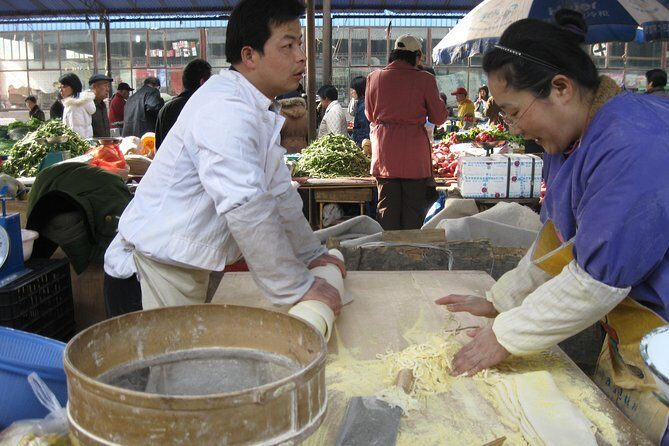

Morning Market 早市
Steam rises from dumpling stalls, mingling with the sharp scent of scallion and soy. Elderly women weigh vegetables; a child runs between baskets of persimmons. Here, the city begins each day in color and appetite — its pulse set to the rhythm of exchange.